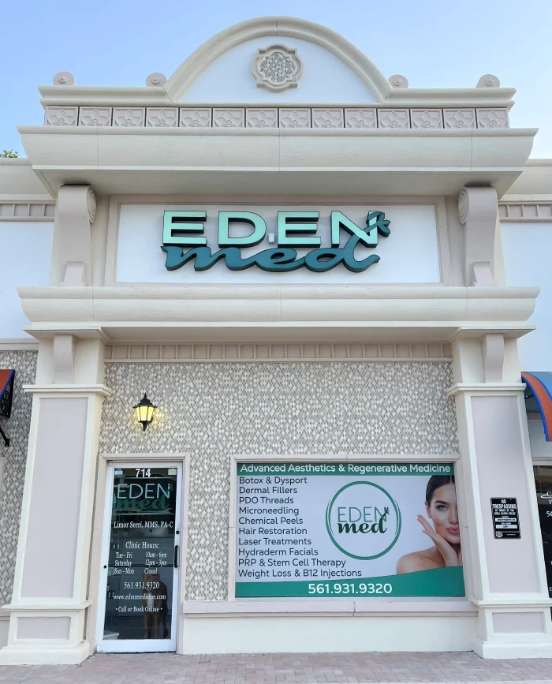
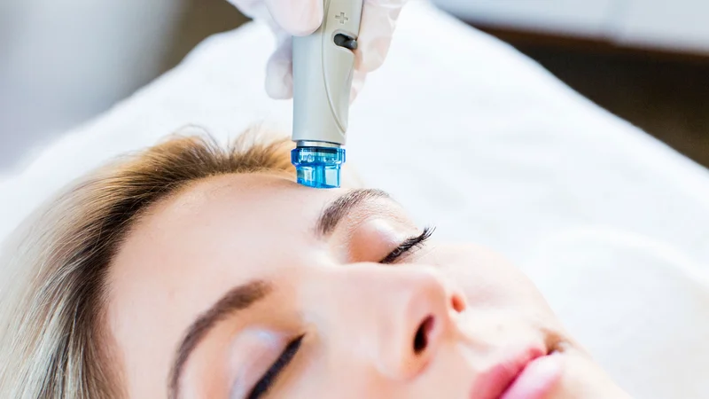

01 / Injectables
Botox & Dysport
A considered approach to expression lines and a refreshed appearance.
Learn more
Medical aesthetics · Boca Raton
Personalized aesthetic care with Limor Serri, MMS, PA-C.
Helping you feel like yourself, beautifully, since 2007.
Limor Serri, MMS, PA-CFounder & Lead Physician Associate

A little haven in East Boca.The Eden philosophy
Good aesthetic care begins with seeing the individual. Your expressions, your features, your sense of self.
At Eden Med Spa in Boca Raton, founder and injector Limor Serri, MMS, PA-C, takes a personal approach to Botox, fillers and skin rejuvenation. Every plan is shaped around your goals, with natural-looking facial balance at its heart.
Discover our approachA considered collection of treatments
From subtle refinement to a fresh start for your skin, find the care that feels right for you.
01 / Injectables
A considered approach to expression lines and a refreshed appearance.
Learn more02 / Facial balance
Individual attention to shape, proportion and the features that make you, you.
Learn more
03 / Skin health
Facials, peels and microneedling, tailored to your skin and its changing needs.
Learn moreInjectables & regeneration
Wrinkle relaxers and the Botox lip flip.
Restylane and Juvéderm for lips and facial volume, with treatment areas discussed at your consultation.
Biostimulator options for facial and hand rejuvenation.
Consultations for facial PRP, hair restoration and regenerative treatments.
Consultations for visible spider veins and facial capillaries.
Skin & complexion
Water-based cleansing, exfoliation and serum infusion, with personalized additions.
Microneedling paired with hyaluronic acid and peptides, or PRP.
The Perfect Derma Peel, with acne and pigmentation booster options.
Radiofrequency microneedling for face and neck. Ask about the VAMP add-on.
A skin treatment available through Eden’s booking menu.
SkinBetter Science, Obagi Nu-Derm and prescription lash care.
Wellness & body
Medically supervised semaglutide and tirzepatide programs, with an individual assessment.
An option to discuss alongside your nutrition and activity plan.
Wellness injections selected in consultation with your provider.
Administered as a slow IV push at Eden Med.
Body contouring and chin-slimming consultations, including Kybella.
Your consultation is the place to discuss suitability, benefits, risks and alternatives with Limor. View Eden’s services
Not sure where to begin? That’s what a consultation is for.
Let’s talk
Meet your practitioner
Limor Serri, MMS, PA-C
Founder & Lead Physician Associate
Limor founded Eden Med in 2007 with a focus on natural beauty and harmonious facial balance. Her approach brings careful attention to the details that make each face unique.
A board-certified Physician Associate, she earned her Master in Medical Science with Honors at Nova Southeastern University in 2000. She also holds a degree in Sports Medicine and Kinesiology from Michigan State University.
Get to know LimorThe difference is in the care
Meet directly with Limor to understand your options and build your treatment plan.
A focus on facial harmony and subtle refinement that respects your natural features.
Personalized care in East Boca, just beyond the Palmetto Park bridge and near the ocean.
In our patients’ words
She patiently listens to your goals
and explains everything in detail.
Brittany W. Patient testimonial · June 5, 2024
More patient storiesA conversation is a lovely place to start
Meet with Limor. Share what’s on your mind.
Explore a plan that feels like you.
Find your way to Eden
Our home is in East Boca, just east of the Palmetto Park bridge.
Eden Med Spa714 E Palmetto Park RoadVisit us
For appointment availability, check our booking calendar.
Serving Boca Raton, East Boca, Mizner Park and Delray Beach.